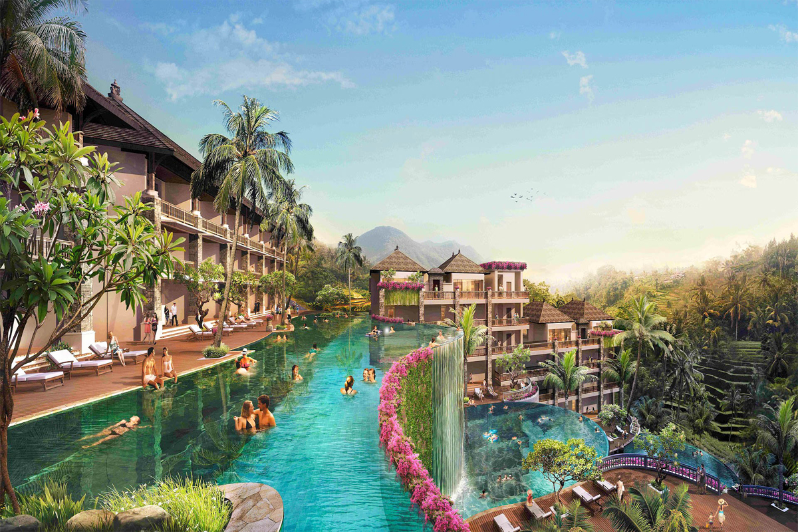
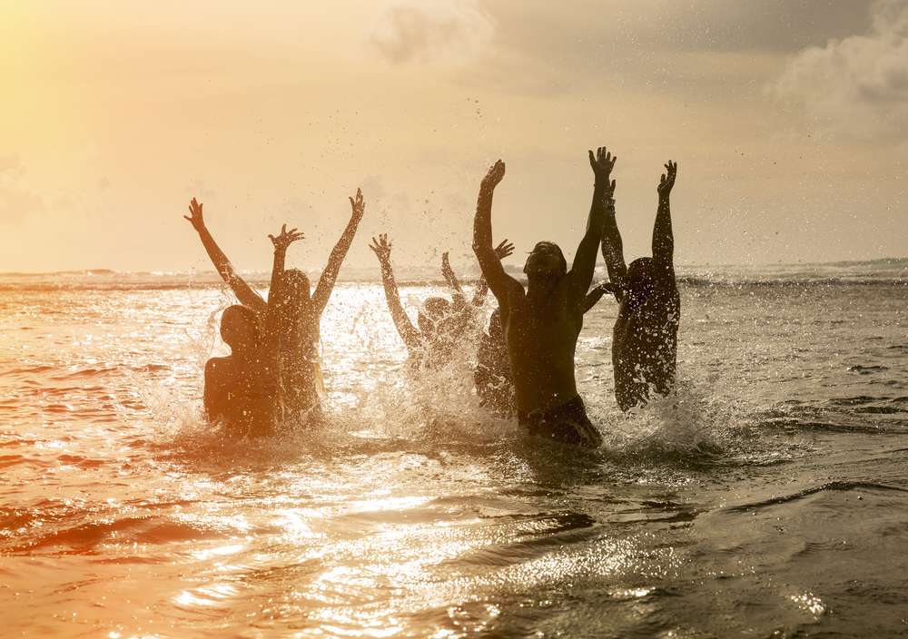
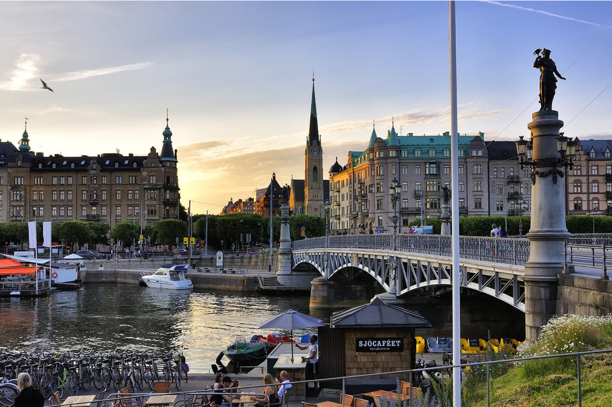
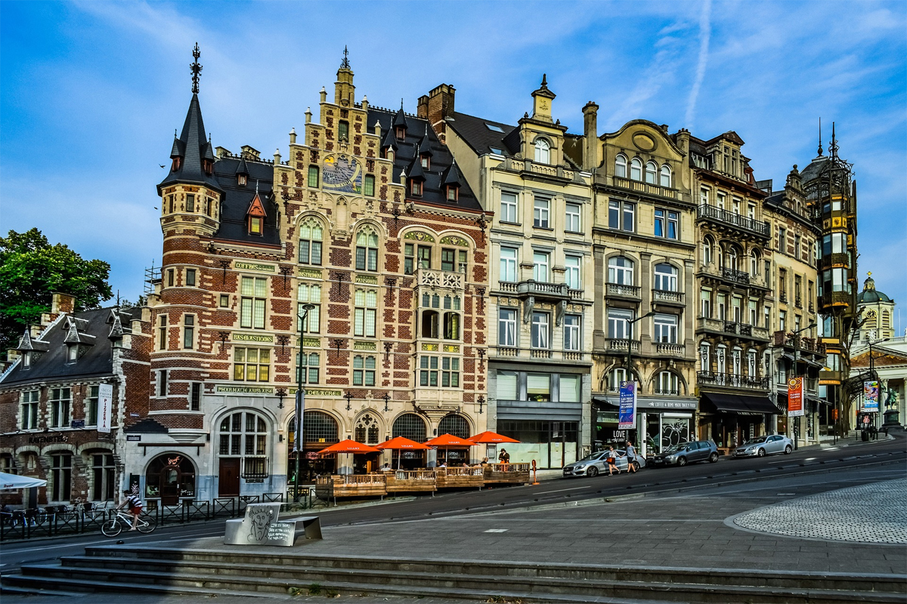
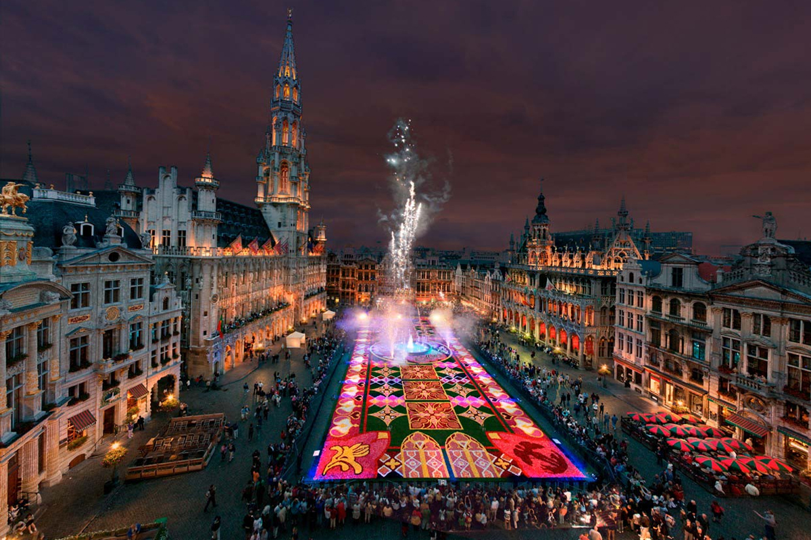
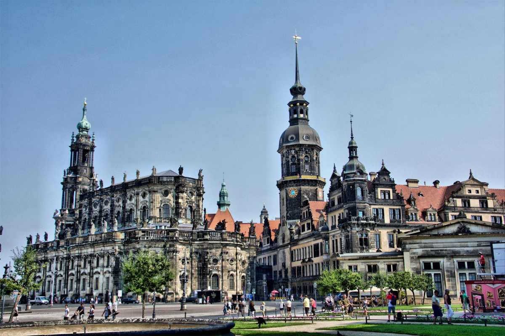
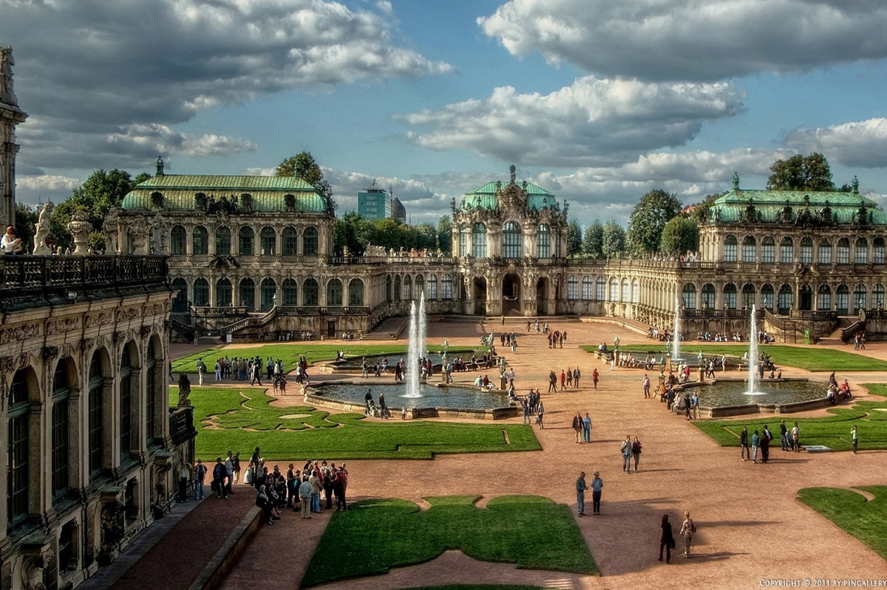
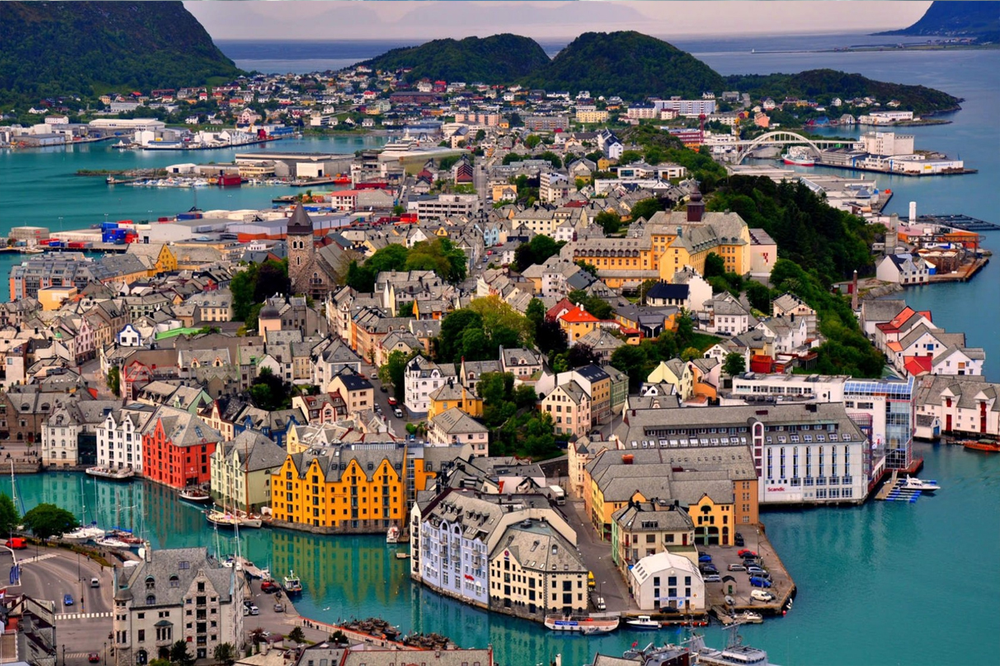
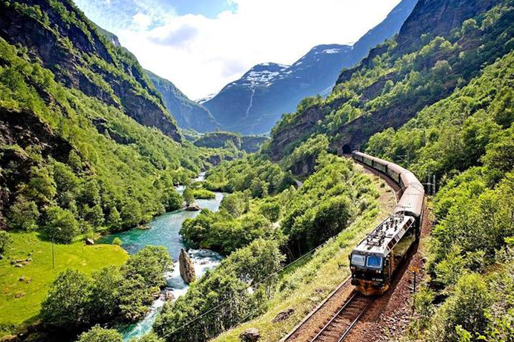

П'ять найпопулярніших туристичний міст
Вже зовсім скоро зміниться пора року, і літо порадує теплим сонцем, канікулами і вихідними. Куди ж найкраще відправитися за незабутніми враженнями? Пропонуємо вашій увазі Топ-5 місць куди вже зараз бронюють вильоти туристи на «високі дати» по всьому світу.
Балі
Балі здобув таку популярність завдяки прекрасним природним паркам з вулканами, приємному клімату, гарним пляжам та індонезійському колориту. Останній дуже добре проявляється у численних традиційних храмах, селищах та місцевій кухні, яка, до речі, включає й оригінальну каву Копі-Лувак. Не сидіть на місці, а зробіть активну екскурсію всередину Балі до вулканів та природних парків. Якщо цього буде замало, то вам на сусідні острови, до яких можно сплавати або навіть злітати протягом дня. Для цієї подорожі ми підібрали бюджетний але пристойний готель Ma Homestay, що розташований в районі Нуса-Дуа на півдні Балі. За невисоку ціну ви отримаєте комфорний номер з видом на сад і терасою. 
Стокгольм
Стокгольм – столиця королівства Швеція. Стокгольм одне із найгарніших міст Скандинавії із унікальною природою: він збудований на березі озера Меларен і разом із 14 великими та 24 тисячами маленьких островів утворюють Стокгольмський Архіпелаг. В місті немає жодних промислових підприємств, тому повітря надзвичайно чисте + є величезна кількість парків, каналів з мостами, які з’єднують острови між собою.
 Якщо Ти в Стокгольмі вперше – знайомство з місто варто почати із найбільш цікавих для туриста районів:Старе місто (Gamla Stan), Ріддархольмен (Riddarholmen), Нормальм (Norrmalm), Остермальм (Östermalm), Юргорден (Djurgården), Кунгсхольмен (Kungsholmen). Найкращий спосіб знайомства з містом – це прогулянка.
Якщо Ти в Стокгольмі вперше – знайомство з місто варто почати із найбільш цікавих для туриста районів:Старе місто (Gamla Stan), Ріддархольмен (Riddarholmen), Нормальм (Norrmalm), Остермальм (Östermalm), Юргорден (Djurgården), Кунгсхольмен (Kungsholmen). Найкращий спосіб знайомства з містом – це прогулянка.
Брюссель
Брюссель є неймовірним містом, яке варто побачити та в якому варто затриматись на кілька днів. Це столиця Бельгії та ЄС, яка зачаровує відвідувачів своєю історією, атмосферою, архітектурою та шармом.Коли потрапляєш до серця Брюсселю, а саме на площу Гран-Плас, то бачиш щось надзвичайне, все ніби на сцені Оперного театру поміж декорацій.  Вулички біля центральної площі Брюсселя – суцільні ресторани. Піцерії, брасері, тратторії, паби – між столиками на бруківці прохід вузький-вузький. На відчинених вікнах і виносних столиках – печеня, баранячі котлети на кісточці, рагу щойно з печі, соковиті фрукти, різні заморожені морепродукти – тільки замов, і тобі приготують хоч морську зірку, хоч устриці, хоч восьминога.
Дрезден
 Дрезден - це місто, яке після цілковитого зруйнування під Час Другої Світової війни, постало з руїн і тим самим здивувало весь світ. Більшість історичних будівель збудовано із піщаника – каменю, який з часом чорніє. Дрезден - є столицею німецької федеральної землі Саксонія (Sachsen Freistaat), є промисловим, урядовим та культурним центром, відомий у всьому світі террасою Bruehl та її історичними пам’ятками в Старому Місті (Альтштадт). Долина річки Ельби внесено до Всесвітньої спадщини ЮНЕСКО.
Норвегія
Норвегія – дуже гарна північна країна, хоча й достатньо холодна. Природа тут надзвичайна і, через географічне положення Норвегії, просто унікальна. Без перебільшення.  Перед вами модель 1964 року оснащена 6,4 літровим двигуном потужністю 320 к.с. Автомобіль оснащений заднім приводом, а також в якості опції оснащувався триступеневої автоматичною трансмісією. В базових комплектаціях машина поставлялася з чотириступінчастою механічною коробкою передач. Чудові краєвиди.Скелі, фьорди, океан, гірські вершини, водоспади і льодовики – все в одній країні. До того ж тут дзеркально чиста вода і свіже повітря. Усім, хто любить активний відпочинок, природу і гори тут обов’язково сподобається. Полярне сяйво.Найчастіше можна побачити в Північній Норвегії на архіпелазі Шпіцберген за полярним колом. Ідеальні умови: безхмарне небо, немає дощу і є достатньо снігу. Сяйво може з’являтись декілька разів на добу або ж раз на тиждень.. як пощастить. Найкраща пора це грудень- січень, коли світловий день найкоротший. Дорога тролів.Стрімка серпантинна дорога із 11 крутими поворотами піднімається високо в гори. Через те, що дорога в деяких місцях досить вузька, обмежений рух великого транспорту. Гарні краєвиди, водопад і оглядова площадка роблять її популярною серед туристів.
© Пучак Віталій